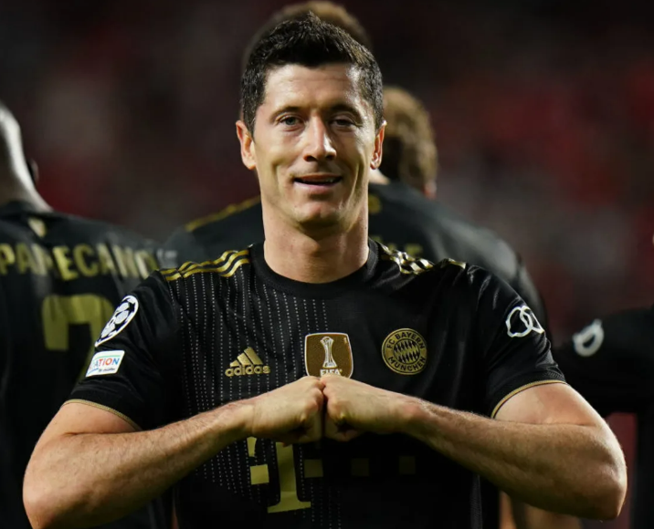
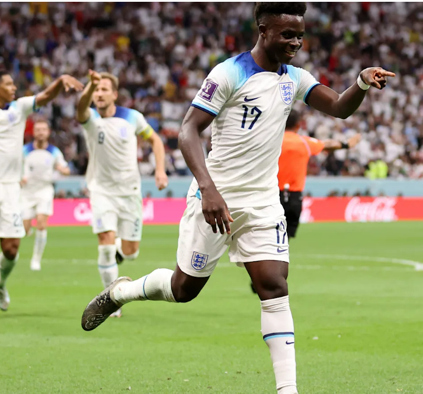
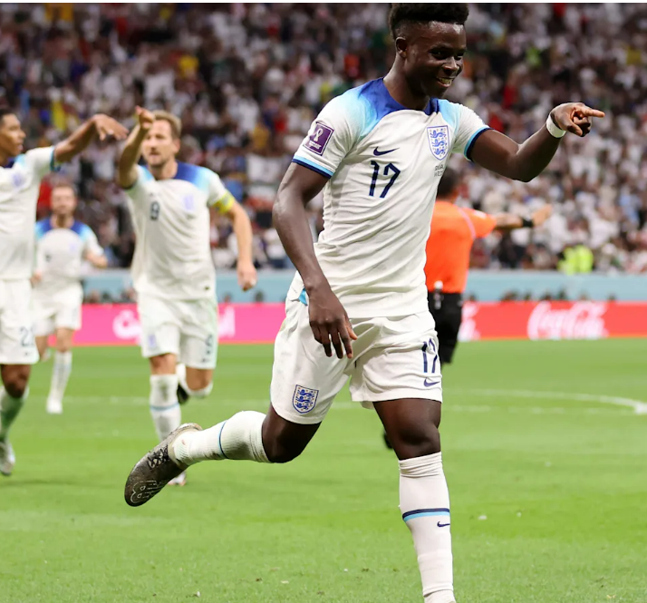
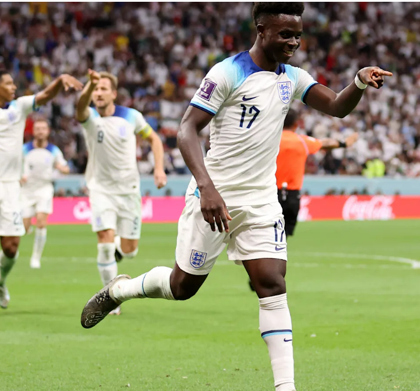

The most popular sport in the world, football, has had some true
heroes who have transcended the game itself and
cemented their legacy in the minds of football fans forever. Is
picking the best football players of all time even possible?
those player include the famous noe that you already know
,and other known in the history.
BEST PLAYER OF THE DECADE
TRight let's get this out of the way before you get mad at us for not including y
our favourite player of the last decade in this top ten.
Here's the list of players who were considered - strongly considered, in fact -
for this list, but after weeks of debate
between 90min's editorial staff, didn't quite make the cut.

TOP GROWING
An unknown 17-year-old named Pele in 1958, Michael Owen in 1998, Ro
naldinho in 2002, Mario Götze in 2014 - every football World Cup see
s young stars explode into the popular consciousness and Qatar 2022 is no different.
There simply isn't enough space to talk about all the rising stars
here, take a look at France's squad along with the likes of Aurelien
Tchouameni (22), Eduardo Camavinga (19),
Kylian Mbappe (23), William Saliba (21), Jules Kounde (23)..

RICHEST
Professional sportsmen and women make up a substantial percentage of the
wealthiest people in the world. In this article, you will discover who is
the richest footballer in the world in 2023, their net worth
and their houses and cars. Read more: player
listicles/21400-who-top-richest-footballers-world/


 
